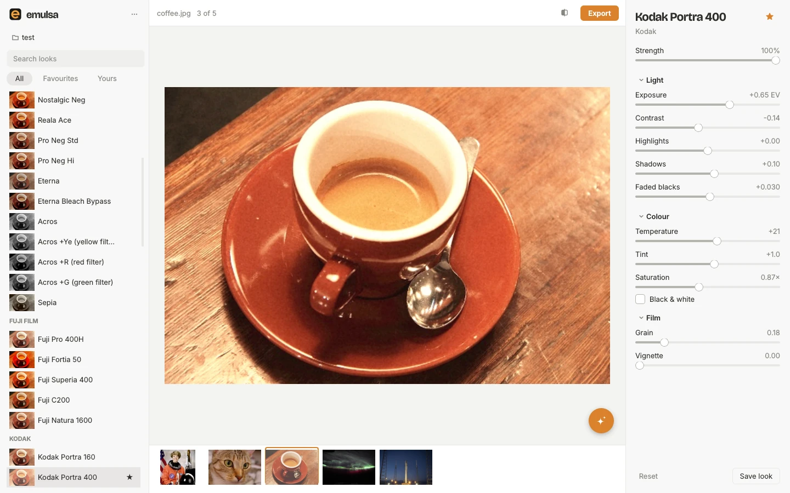
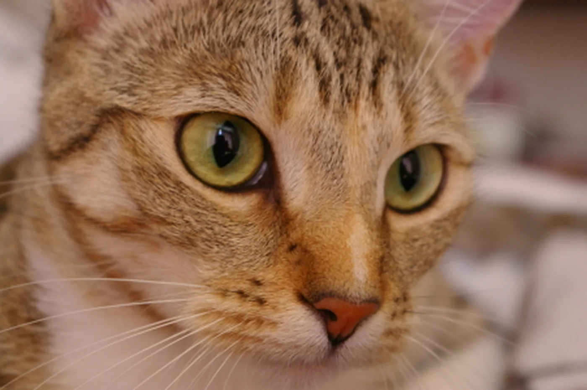
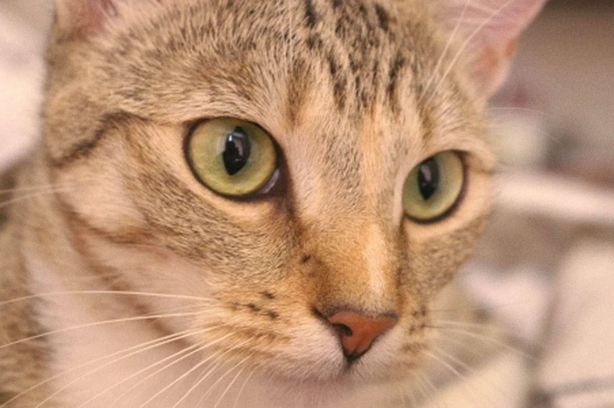

Film looks for your photos.
Pick a look, see it on your photo straight away, adjust it, and export one photo or a whole folder. Seventy-seven looks, from Portra to Tri-X.
Free and open source, for Windows, macOS and Linux. All downloads

Try it on a photo.
These are Emulsa’s own looks, rendered by the app’s engine. Drag across the photo to compare with the original.


Original Kodak Portra 400Tip: hold \ to see the original, the same shortcut as in the app.
Seventy-seven looks to start from.
Fujifilm simulations, Kodak, Ilford and Cinestill stocks, Ricoh GR, Leica and more. In the app, every look is previewed on your own photo, so you see the result before you click.
- ProviaFujifilm
- Kodak Portra 160Kodak
- Cinestill 50D (Blue Velvet)Cinema
- Ilford HP5Ilford
- Leica ContemporaryLeica
- GR Positive FilmRicoh GR
- Hasselblad HNCS NaturalHasselblad
- VelviaFujifilm
- Kodak Portra 400Kodak
- Cinestill 800TCinema
- Ilford FP4Ilford
- Leica ClassicLeica
- GR Negative FilmRicoh GR
- Canon StandardCanon and Nikon
- AstiaFujifilm
- Kodak Portra 800Kodak
- Classic CinemaCinema
- Ilford Delta 100Ilford
- Leica EternalLeica
- GR Bleach BypassRicoh GR
- Canon PortraitCanon and Nikon
- Classic ChromeFujifilm
- Kodak Gold 200Kodak
- Rec709 Video (flat-ish)Cinema
- Ilford Delta 3200Ilford
- Leica MonochromLeica
- GR RetroRicoh GR
 Canon FaithfulCanon and Nikon
Canon FaithfulCanon and Nikon- Classic NegativeFujifilm
- Kodak Ultra Max 400Kodak
- Ilford Pan F 50Ilford
- GR Cross ProcessRicoh GR
- Nikon FlatCanon and Nikon
- Nostalgic NegFujifilm
- Kodak Color Plus 200Kodak
- GR Hi-Contrast B&WRicoh GR
- Nikon VividCanon and Nikon
- Reala AceFujifilm
- Kodak Ektar 100Kodak
- GR Hard MonotoneRicoh GR
- Pana L.Monochrome DPanasonic and Olympus
- Pro Neg StdFujifilm
- Kodak Ektachrome E100Kodak
- GR Soft MonotoneRicoh GR
- Pana L.ClassicNeoPanasonic and Olympus
- Pro Neg HiFujifilm
- Kodachrome 64Kodak
- Olympus Pop ArtPanasonic and Olympus
- EternaFujifilm
- Kodak Vision3 500T (daylight)Kodak
- Olympus Pale & LightPanasonic and Olympus
- Eterna Bleach BypassFujifilm
- Kodak Vision 200T (Asteroid City)Kodak
- Agfa Vista 200Other film
- AcrosFujifilm
- Kodak Tri-X 400Kodak
- Agfa Ultra 100Other film
- Acros +Ye (yellow filter)Fujifilm
- Kodak T-MaxKodak
- Polaroid / InstaxOther film
- Acros +R (red filter)Fujifilm
- Kodak Tri-X 1600 (pushed)Kodak
- Sony StandardSony
- Acros +G (green filter)Fujifilm
- Sony PT (portrait)Sony
- SepiaFujifilm
- Sony NT (neutral)Sony
- Fuji Pro 400HFujifilm
- Sony VV (vivid)Sony
- Fuji Fortia 50Fujifilm
- Sony VV2Sony
- Fuji Superia 400Fujifilm
- Sony FL (film-like)Sony
- Fuji C200Fujifilm
- Sony IN (instant)Sony
- Fuji Natura 1600Fujifilm
- Sony SH (soft high-key)Sony
Everything in one quiet window.
Open a photo, a few, or a whole folder. Emulsa does the rest without getting in your way.
Works with your files
JPEG, PNG, TIFF and RAW from Sony, Canon, Nikon, Fujifilm and others, including DNG. Your originals are never changed.
Zoom to full detail
Scroll or pinch to zoom, drag to move around. The look is applied at full resolution, RAW included.
Make a look your own
Exposure, contrast, highlights, shadows, faded blacks, temperature, tint, saturation, grain and vignette. Save your versions and star favourites.
Export a whole folder
JPEG, TIFF or PNG, at full size or resized. EXIF data from JPEGs is kept.
Take a look anywhere
Save any look as a .cube LUT for DaVinci Resolve, Premiere, Final Cut or OBS.
Light and dark
Emulsa follows your system appearance, and gets out of the way of your photo.
Describe a look. See it on your photo.
Type something like “warm 70s film, faded blacks”, or attach a photo whose colours you like. The look assistant builds it on your photo. Undo it, or save it as your own.
The assistant runs on Claude with your own Anthropic API key, usually a few cents per message. Your key is kept in your system’s keychain, and your photo is only sent when you press Send.
Private by default.
Your photos stay with you
Everything happens on your computer. Nothing is uploaded unless you message the assistant, and then only a 1024 px copy.
Free and open source
MIT licence. Every line is on GitHub to read, build or change.
Checked on every build
Unit tests, a security scan of the code and a check of every dependency run before each release.
Updates you choose
Emulsa tells you when a new version is out. It never downloads or installs anything by itself.
Download Emulsa.
Version 0.5.0. Free, with no account and no ads. Your favourites and custom looks are kept when you update.
-
Windows
Windows 10 or 11, 64-bit
EmulsaSetup-0.5.0.exe55 MB
Download for Windows -
macOS
macOS 11 or later, Apple silicon
Emulsa-0.5.0-macOS-arm64.dmg65 MB
Download for Mac -
Linux
x86-64 AppImage
Emulsa-0.5.0-x86_64.AppImage111 MB
Download for Linux
Windows says it protected my PC
Emulsa isn’t signed with a paid developer certificate yet, so Windows doesn’t recognise it. Click More info, then Run anyway. You only need to do this once.
macOS won’t open it the first time
Drag Emulsa to Applications and open it. When macOS blocks it, go to System Settings → Privacy & Security and click Open Anyway. Intel Macs can run Emulsa from source.
The Linux AppImage won’t start
Make it executable with chmod +x Emulsa-*.AppImage. If it still won’t start, install libxcb-cursor0 on Ubuntu or Debian, or xcb-util-cursor on Fedora or Arch.
How do I update?
Emulsa checks for a new version once a day and shows a notice with a Download button. Install the new version over the old one; there’s no need to uninstall first. You can also check any time from the ••• menu.
Built on Recipe Lab.
Emulsa started from the 77 in-camera recipes in Recipe Lab by André Domingues, who worked out how to store film looks inside the Sony A6000 and tested each one against reference frames. Emulsa turns those recipes into colour grades for any photo from any camera. If you shoot an older Sony, use Recipe Lab on the camera, and consider sponsoring his work.